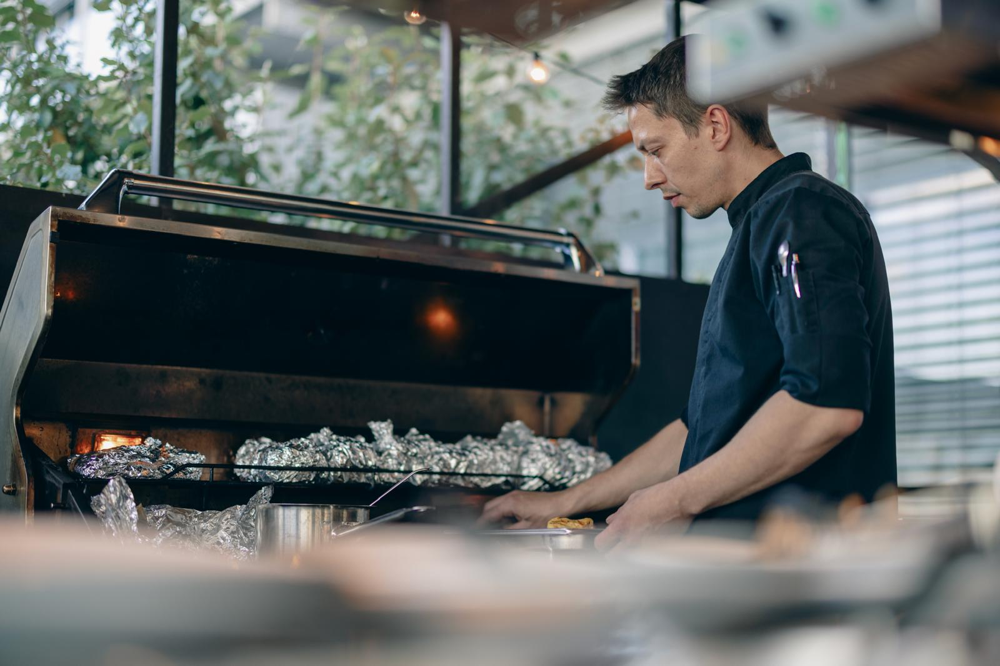
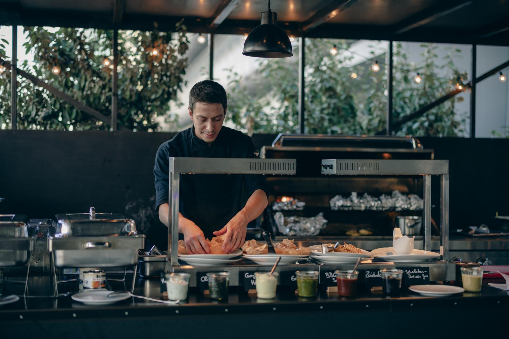

Chef de Cuisine für private Dinner, Events und besondere Anlässe
Der Duft von gerösteten Kräutern in heißer Butter, eine Kruste, die unter dem Messer knackt, ein Sud, der stundenlang eingekocht wurde, bis er auf der Zunge explodiert – das ist der Ausgangspunkt jeder Karte. Klare Aromen, saisonale Produkte und eine Technik, die dem Geschmack dient, statt sich vor ihn zu stellen. Kein Konzept von der Stange, sondern ein Menü, das für Ort, Anlass und Gäste neu gedacht wird.
Zwischen Tübingen und Köln liegt mehr als eine Wegstrecke – es ist der Bogen einer Küche, die sich nie mit einem Stil zufriedengegeben hat. Ambitioniert in der Technik, facettenreich im Zugriff, kompromisslos im Anspruch: was bleibt, ist kulinarischer Höchstgenuss, der noch lange nachschmeckt.
Private Dinner im kleinen Kreis, kulinarische Begleitung von Firmenfeiern und Geschäftsessen, mehrgängige Menüs zur Hochzeit oder zum runden Geburtstag, exklusive Verkostungen mit Weinbegleitung – jeder Anlass bekommt eine eigene Karte, kein Konzept von der Stange.
Ebenso gefragt auf großer Bühne: Live-Cooking vor Publikum, zuletzt für das Bundesamt für Gesundheit und Ernährung auf der Singapore Food Expo und der Grünen Woche Berlin.
Seither: private Küche für Dinner, Events und besondere Anlässe im Kölner Raum und darüber hinaus.

Am HerdWas zählt, ist der Moment am Tisch.